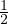

Tõenäosus kirjeldab sündmuse toimumise võimalikkust. Tõenäosuse kirjeldamiseks
seatakse sündmusega vastavusse arv nullist üheni, mis iseloomustab sündmuse
toimumise võimalikkust.
Tõenäosus on null, kui sündmus ei toimu ja tõenäosus on üks, kui sündmus toimub.
Seega jäävad tõenäosuse võimalikud väärtused 0 ja 1 vahele.
Näiteks katse tulemuse tõenäosus 0.5 tähendab seda, et iga kord kui vastavat katset
teha on vastava tulemuse saamise võimalus pool. Näiteks enne mündiviset on kulli
tulemise tõenäosus , kuna pärast mündiviset on tulemuseks kull või kiri.